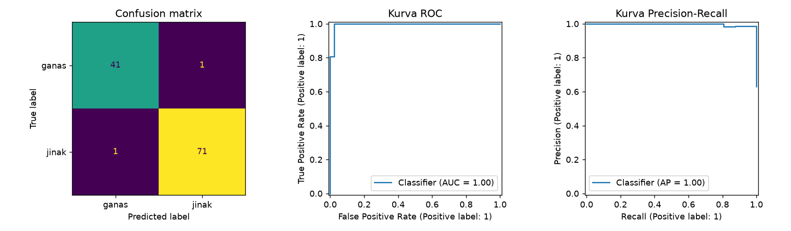

Evaluasi Model Klasifikasi¶
Tujuan pembelajaran¶
- Membaca confusion matrix dan menurunkan metrik darinya.
- Menafsirkan ROC-AUC dan PR-AUC, serta kapan memakainya.
- Mengubah ambang keputusan untuk menukar precision dan recall.
- Mengenal metrik tambahan dan batasannya.
Prasyarat
Definisi dasar accuracy, precision, recall, dan F1 ada di Metrik Evaluasi. Lesson ini memakainya pada model nyata.
Dari prediksi ke metrik¶
Model menghasilkan probabilitas (predict_proba), lalu kelas ditentukan dengan ambang (threshold), biasanya 0,5. Metrik yang berbeda menilai bagian yang berbeda:
| Metrik | Bergantung pada ambang? | Fungsi |
|---|---|---|
| Accuracy, precision, recall, F1 | Ya | Kinerja pada satu ambang tertentu |
| ROC-AUC | Tidak | Kemampuan mengurutkan positif di atas negatif |
| PR-AUC (average precision) | Tidak | Seperti ROC-AUC, lebih peka pada kelas positif langka |
Kurva ROC memplot TPR terhadap FPR untuk semua ambang. ROC-AUC = peluang sebuah positif acak mendapat skor lebih tinggi daripada sebuah negatif acak (1,0 sempurna, 0,5 setara menebak).
Implementasi langkah demi langkah¶
Model yang dinilai adalah regresi logistik berskala dari pelajaran sebelumnya, pada data uji Breast Cancer. Program examples/classification/evaluation.py; program lengkap ada di akhir bagian ini.
Langkah 1: menyiapkan model¶
Pembagian data dan pelatihan sama dengan pelajaran sebelumnya: model dilatih pada data latih dan siap dinilai pada X_test, y_test. OUT adalah folder tujuan gambar.
Langkah 2: prediksi kelas dan probabilitas¶
Konsep. Model menghasilkan probabilitas, lalu kelas ditentukan dengan ambang (threshold), biasanya 0,5.
| evaluation.py | |
|---|---|
predict mengembalikan label (0 atau 1). predict_proba mengembalikan tabel probabilitas dengan satu kolom per kelas; [:, 1] mengambil probabilitas kelas 1 (jinak) untuk semua baris. Kita memerlukan probabilitas untuk ROC, PR, dan ambang.
Langkah 3: confusion matrix¶
Konsep. Confusion matrix menghitung berapa sampel tiap kelas sebenarnya yang diprediksi sebagai tiap kelas. Untuk dua kelas hasilnya tabel 2×2.
| evaluation.py | |
|---|---|
confusion_matrix(y_test, y_pred) mengembalikan matriks dengan baris = label sebenarnya dan kolom = prediksi, urutan kelas 0 lalu 1. .ravel() meratakannya menjadi [TN, FP, FN, TP] yang langsung disimpan ke empat variabel. Perhatikan: karena kelas 1 dianggap "positif" oleh scikit-learn, TP = jinak yang diprediksi jinak dan FN = jinak yang diprediksi ganas.
Interpretasi. Dari 42 kasus ganas, 41 diprediksi benar dan 1 diprediksi jinak (negatif palsu bagi deteksi ganas). Dari 72 kasus jinak, 71 benar dan 1 diprediksi ganas. Total 112 benar dari 114.
Langkah 4: laporan metrik dan metrik berbasis probabilitas¶
| evaluation.py | |
|---|---|
classification_report(..., target_names=[...]) memberi nama kelas pada laporan. roc_auc_score(y_test, y_proba) dan average_precision_score(y_test, y_proba) menerima probabilitas, bukan label, sehingga tidak bergantung pada ambang tertentu.
precision recall f1-score support
ganas (0) 0.976 0.976 0.976 42
jinak (1) 0.986 0.986 0.986 72
accuracy 0.982 114
macro avg 0.981 0.981 0.981 114
weighted avg 0.982 0.982 0.982 114
ROC-AUC : 0.995
PR-AUC (avg. prec): 0.997
Interpretasi. Precision dan recall kelas ganas 0,976; kelas jinak 0,986. Karena recall kelas ganas = 41/(41+1), satu kasus ganas yang terlewat sudah menurunkannya ke 0,976. ROC-AUC 0,995 dan PR-AUC 0,997: model hampir sempurna mengurutkan sampel dari paling mungkin jinak hingga paling mungkin ganas. Dengan hanya 114 data uji, nilai ini punya ketidakpastian dan akan lebih rendah pada data klinis yang lebih sulit.
Langkah 5: menggeser ambang keputusan¶
Tujuan. Menukar precision dan recall sesuai biaya kesalahan. Bila yang ingin kita tangkap adalah kasus ganas, "positif" harus berarti ganas.
| Kode | Penjelasan |
|---|---|
y_malignant = (y_test == 0).astype(int) |
Label baru: 1 bila sebenarnya ganas, 0 bila jinak. |
p_malignant = 1 - y_proba |
Probabilitas ganas = 1 dikurangi probabilitas jinak. |
(p_malignant >= t).astype(int) |
Prediksi "ganas" bila probabilitasnya mencapai ambang t. |
missed |
Jumlah kasus ganas sebenarnya yang tidak ditandai ganas (negatif palsu). |
Ambang P(ganas) precision_ganas recall_ganas ganas_terlewat
0.1 0.788 0.976 1
0.3 0.891 0.976 1
0.5 0.976 0.976 1
0.7 1.000 0.952 2
0.9 1.000 0.881 5
| Ambang | Precision ganas | Recall ganas | Ganas terlewat |
|---|---|---|---|
| 0,1 | 0,788 | 0,976 | 1 |
| 0,3 | 0,891 | 0,976 | 1 |
| 0,5 | 0,976 | 0,976 | 1 |
| 0,7 | 1,000 | 0,952 | 2 |
| 0,9 | 1,000 | 0,881 | 5 |
Interpretasi. Menaikkan ambang membuat model lebih "pelit" menyebut ganas: precision naik tetapi recall turun (pada 0,9, 5 kasus ganas terlewat). Menurunkan ambang menambah alarm palsu (precision turun ke 0,788 pada 0,1). Pada ambang 0,1 satu kasus ganas tetap terlewat: model sangat yakin salah pada sampel itu, sehingga tidak semua kesalahan dapat diperbaiki dengan mengubah ambang. Ambang yang tepat ditentukan oleh biaya kesalahan dan harus dipilih dengan data validasi, bukan data uji.
Langkah 6: gambar confusion matrix, ROC, dan PR¶
ConfusionMatrixDisplay, RocCurveDisplay, dan PrecisionRecallDisplay menggambar langsung dari label dan probabilitas pada sumbu (ax) yang kita berikan; from_predictions berarti masukannya prediksi yang sudah dihitung.

(Label sumbu pada gambar mengikuti bahasa bawaan scikit-learn.)
Cara membaca.
- Confusion matrix (kiri): diagonal (41 dan 71) adalah prediksi benar; sel di luar diagonal (1 dan 1) adalah kesalahan.
- Kurva ROC (tengah): sumbu-x false positive rate, sumbu-y true positive rate (recall) untuk semua ambang. Kurva yang menempel ke sudut kiri atas berarti model memisahkan kelas dengan baik; diagonal berarti tebakan acak. Luas di bawah kurva = ROC-AUC.
- Kurva Precision-Recall (kanan): sumbu-x recall, sumbu-y precision; kurva yang menempel ke sudut kanan atas berarti baik. Lebih informatif daripada ROC pada data sangat timpang.
Program lengkap (evaluation.py)
Metrik tambahan¶
| Metrik | Gunanya | Catatan |
|---|---|---|
| Balanced accuracy | Rata-rata recall per kelas | Lebih adil daripada accuracy pada data timpang |
| Matthews correlation coefficient (MCC) | Satu angka yang memperhitungkan keempat sel confusion matrix | Tetap informatif pada data timpang |
| Log loss | Menilai kualitas probabilitas | Menghukum prediksi yakin yang salah |
| Macro/weighted average | Merangkum metrik multikelas | Macro memperlakukan semua kelas setara |
Kesalahan umum¶
Hindari
- Menganggap kelas
1selalu kelas yang penting; periksapos_label. - Memakai ROC-AUC pada data sangat timpang tanpa melihat PR-AUC.
- Memilih ambang berdasarkan data uji.
- Melaporkan satu angka tanpa confusion matrix.
- Menganggap
predict_probaselalu terkalibrasi.
Latihan¶
- Hitung manual precision dan recall kelas jinak dari confusion matrix [[41, 1], [1, 71]].
- Tambahkan
balanced_accuracy_scoredanmatthews_corrcoef. - Ulangi tabel ambang untuk kelas jinak sebagai positif. Bagaimana polanya?
- Untuk skrining penyakit, ambang berapa yang Anda pilih dari tabel di atas dan mengapa?
Ringkasan¶
Metrik berbasis ambang menilai satu titik operasi; ROC-AUC dan PR-AUC menilai pengurutan. Ambang mengatur pertukaran precision dan recall sesuai biaya kesalahan. Selalu baca confusion matrix dan periksa kelas positif.
Berikutnya: Kelas Tidak Seimbang dan Validasi Silang.